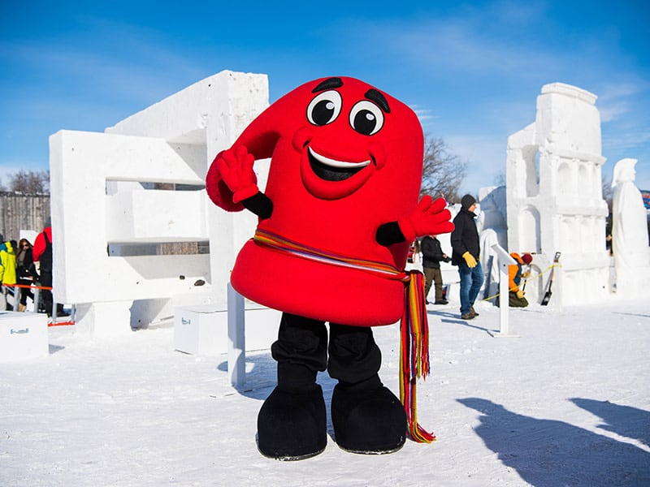

Festival du Voyageur 2027: February 12 to 21, Winnipeg

Festival du Voyageur runs February 12 to 21, 2027. Ten days, at Whittier Park at the end of St. Joseph Street in St. Boniface, which the festival renames Voyageur Park for the duration. We have sent enough guests across the river in February to have opinions about which of those ten days you actually want, so here they are.
Which of the ten days to pick
The middle of the run carries the Louis Riel Day long weekend, with Manitoba's holiday falling on Monday February 15. That is the festival at full volume: the sculpture paths are shoulder to shoulder once the light goes, the tent lines are long, and the shuttle leaves full. Mid-February sunset in Winnipeg is around 5:40 p.m., so if you want the sculptures lit and the crowd loud, that is the weekend, and you should be through the gate by five.
Guests who want the other version we send on a weekday evening in the second week. Same sculptures, same fiddles, and a queue at the pea soup window you can actually stand in. A Wednesday or Thursday night is our own preference: you get a seat in a tent, you hear the band over the room instead of under it, and you are back across the Red by ten. The festival sells weekend passes that cover one weekend or the other, so choose the weekend first and the pass second.
One thing worth knowing about the sculptures. The International Snow Sculpture Symposium carves before and during the opening days; in 2026 it ran February 10 to 15. Come early in the run and you will walk past blocks still being cut, which is better than the finished product if you have children with you.
What a pass costs
Prices for 2027 have not been posted, and tickets go on sale closer to February. Last February the festival priced a Voyageur Pass, good for the whole run, at $110 for an adult, $75 for teens 13 to 17 and seniors 65 and over, $30 for youth 6 to 12, and free for children 5 and under. A weekend pass was $75 for an adult. A single day on the opening Friday was $40. Some of the off-site programming is ticketed separately: the Métis evenings at the Auberge du Violon were $15 for adults, and the Wise Wolf Trading Post $10, or $5 if you already held a pass. Treat all of that as the shape of the pricing rather than the 2027 number, and buy from heho.ca.
Fort Gibraltar deserves the daylight hours
The fort inside the park is a replica the festival built for itself. The first log building went up in Whittier Park in 1977, the year the festival moved here from Provencher Park, and the Maison du Bourgeois opened in October 2001. The fort it copies was a North West Company trading post of 1809, which stood at the junction of the Red and the Assiniboine where The Forks is now. Interpreters work the buildings in character through the day and the trades demonstrations are what holds children longest, so do the fort while it is light and save the sculpture paths and the music tents for after dark. Doing it the other way round is the most common mistake we hear about.
The music is the other half of the thing. Last year's programme listed more than 150 performances across the tents, with late-night sets at the Auberge Bisous Bisous, and the Voyageur Games run in the daytime. Between 70,000 and 75,000 people came through the park last February by the organisers' count, against just over 67,000 the year before.
Parking is the one thing we tell guests not to try
Parking at the park is limited and cost $10 last year, and the festival's own advice is to carpool, take a cab, or use the free shuttle. We agree. In recent years that shuttle has come every 15 to 30 minutes from Centre LaVérendrye at 614 Des Meurons Street and from the Université de Saint-Boniface at 200 de la Cathédrale Avenue, starting half an hour before the gates open and running until the park closes.
By bus from our end of town it is two legs: the D19 Corydon east to the Kennedy Street terminal downtown, then an eastbound Provencher route over the river, the F7 St. Anne's to Provencher being the one that runs the length of Provencher Boulevard. From the Provencher stops it is roughly fifteen minutes on foot south to the gate. Check the trip planner on the day; the city rebuilt its bus network in June 2025 and moved the downtown terminal to Kennedy Street in June 2026.
What to wear, and what to eat where
Dress for standing still outdoors rather than walking, because that is what you will be doing: boots with room for a second pair of socks, mittens over gloves, and something over your face for the walk between tents. Most of the warming is indoors in the tents and the fort, and you will want it. Inside the gates the food is what it has always been, pea soup and tourtière and maple taffy poured over snow and rolled onto a stick. Eat the taffy outside and the soup sitting down.
For a real meal before or after, Chaise Café and Lounge at 271 Provencher Boulevard is the closest sit-down room to the gate that we point guests at, about fifteen minutes' walk or three by car. Roasted Nomad at 393 Marion Street is further out and better the next morning; it does brunch Tuesday to Sunday and takes no reservations.
Before you go: the festival sets its pass prices, its music programme and its shuttle stops fresh every year, and 2027 tickets go on sale closer to February. Confirm all of it at heho.ca before you commit to a day.
Where to stay for Festival du Voyageur
Our house is in Crescentwood, on the far side of the Red from St. Boniface: about eight kilometres by road, fifteen to twenty minutes by car outside rush hour, and the two bus legs above if you are not driving. That distance is deliberate on a February weekend. You are not in the festival's parking problem, and you can come back mid-afternoon to thaw out and go again at seven.
The Louis Riel Day long weekend is the one that fills first across the city, and it fills months ahead, so if that is the weekend you want, book it early. Our Airbnb listing has the calendar. If you are building a whole winter trip around it, the Nestaweya River Trail is usually open the same weeks, and the snow maze south of the city is a half-hour drive if the festival leaves anyone with energy.